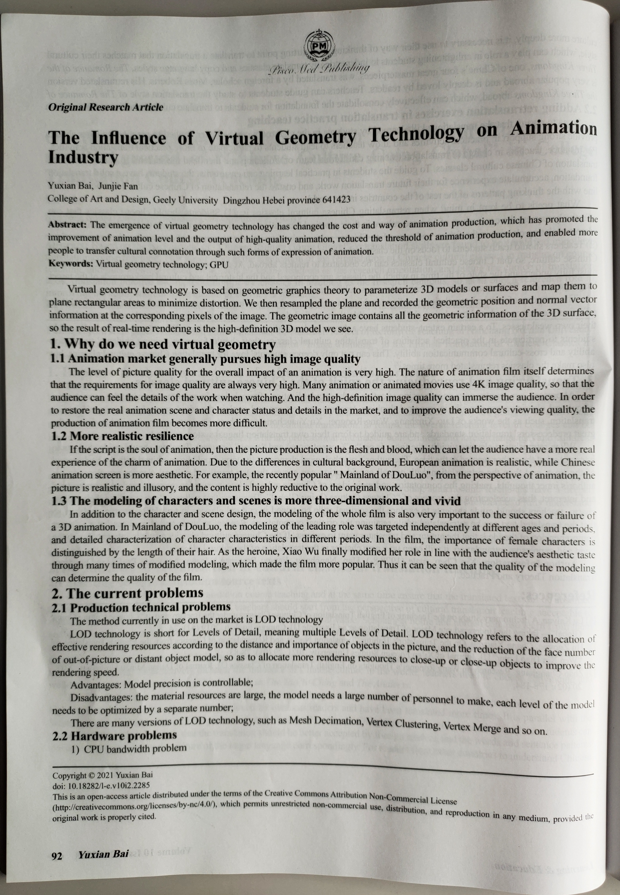
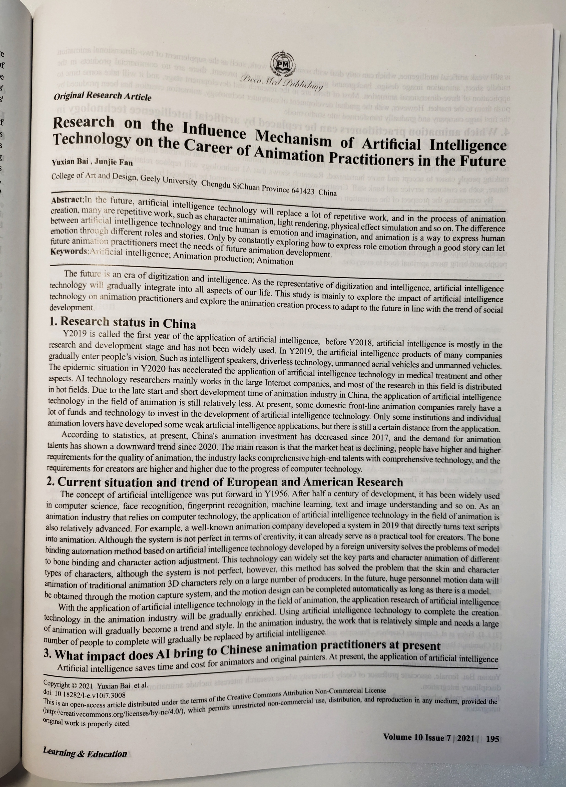
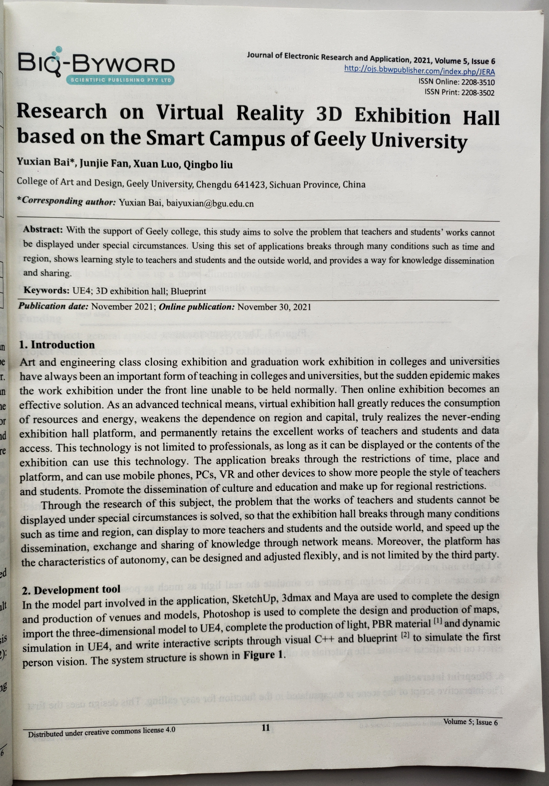
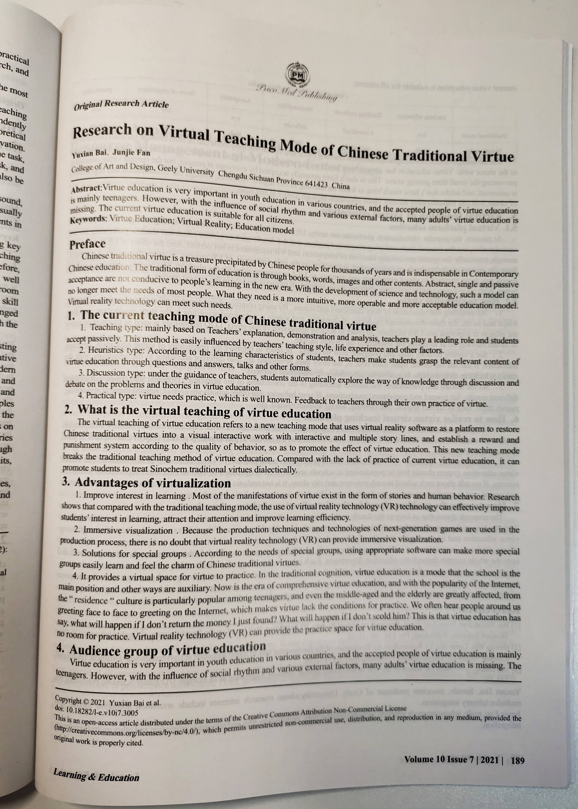
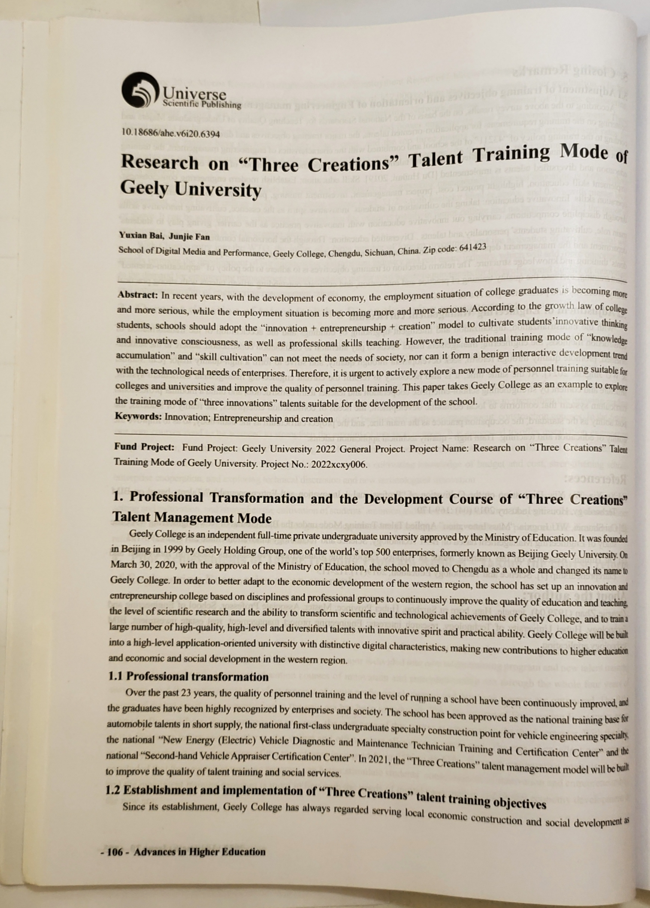

软著和专利
软著
这是我们校级科研“基于吉利学院智慧校园下的虚拟现实三维展览馆的研究”的虚拟显示三维展览系统

外观设计专利
这是一款智能音箱的外观设计专利
系统演示视频
虚拟现实三维展览系统演示视频
这是我们校级科研“基于吉利学院智慧校园下的虚拟现实三维展览馆的研究”的虚拟显示三维展览系统的演示视频。
思政仿真系统演示视频
这是我们2022年四川大学生思想政治教育研究中心课题“虚拟仿真技术在高校思政课建设中的应用研究-以吉利学院思政课堂为例”的思政仿真系统演示视频。
国内外论文
aif高校校企合作思考
出版社：科学中国人，曾获得论文一等奖

人工智能（AI）对交互设计发展的影响
出版社：科技经济导刊

The influence of virtual geometrytechnology on Animation Indust
出版社：Learning&Education

Research on the influence mechanism of artificial intelligence technology on the career of animation practitioners in the future
出版社：Learning&Education

Research on Virtual Reality 3D exhibition hall based on the smart campus of Geely University
出版社：BIQ-BYWORD SCIENTIFIC PUBLISHING PTY LTD，

Research on virtual teaching mode of Chinese traditional virtue
出版社：Learning&Education

Research on "Three Creations"Talent Training Mode of Geely University
出版社：Universe Scientific Publishing Pte.Ltd.
基于UE5的思政仿真系统设计与实现
出版社：华中科技大学出版社